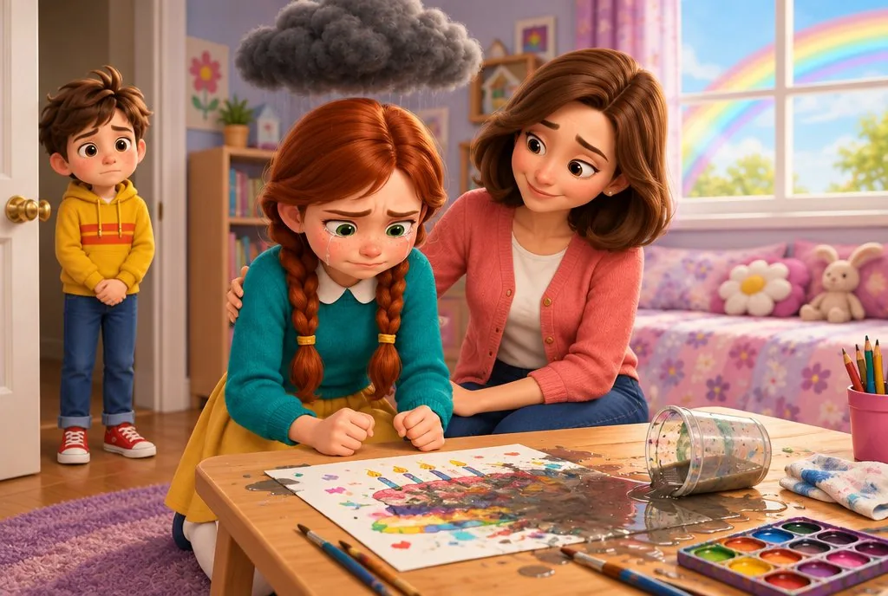

Selv en liten feil blir for mye
Hver liten glipp blir en stor sak. Det er vanskelig å bygge motstandskraft når barnet opplever feil som en katastrofe.
MURPHYS LOV FOR BARN · 5 BØKER I 1
Bøker som viser barnet ditt det skolen ikke alltid rekker å lære bort – hvordan livet faktisk fungerer. Før barnet må finne ut av alt på den vanskelige måten.

Kjøp 1 – få 4 gratis · ca. 225 sider
Engangsbetaling i amerikanske dollar (USD)
📩 Etter kjøpet sendes bøkene på e-post. Ingen frakt og ingen ventetid.
🛡️ 7 dagers fornøydgaranti · 📩 Digital levering · 🔒 Sikker betaling
Høres dette kjent ut?
Barn er nysgjerrige av natur. På skolen lærer de fag, men ikke alltid hvordan livet fungerer. De gjør en feil, står fast og forstår ikke hvorfor det skjedde.
Hver liten glipp blir en stor sak. Det er vanskelig å bygge motstandskraft når barnet opplever feil som en katastrofe.
Skjermen vinner over den virkelige verden, og det å øve på selvkontroll føles som en kamp som allerede er tapt.
Du gjentar beskjeden. Svaret er «snart», men ingenting skjer.
Barnet stopper ved første hinder. Utholdenhet læres ikke ved at vi hever stemmen.
Dette får du i pakken med 5 bøker i 1
Fem PDF-bøker, klare til lesing på skjerm eller utskrift hjemme.

Hovedbok
110 lover · 10 temaunivers

Bonus 1 · gratis
60 spørsmål · 6 temaunivers

Bonus 2 · gratis
12 leksjoner

Bonus 3 · gratis
12 regler

Bonus 4 · gratis
12 regler for vennskap
Møt heltene
En nysgjerrig oppfinner som oppdager livets lover og leter etter en løsning etter hver feil.
En liten oppdager som alltid spør «hvorfor?» og leder barna gjennom en verden av spørsmål.
Lagkapteinen som oppdager at en leder ikke er en sjef, men en som kan lytte til andre.
Sparegriseksperten. Han vet at alle pengevalg har både en synlig og en skjult pris.
Vennen som klarer å bli med i leken, står opp for andre og forstår reglene i gruppen.
Når bestillingen er fullført, får du en e-post med alle fem bøkene som PDF. Les dem på datamaskin, nettbrett eller mobil, eller skriv dem ut hjemme. Ingen pakke og ingen venting på bud.
JEG VIL HA ALLE 5 BØKENE →Dette lærer barnet ditt
Følelser
De humoristiske lovene viser at feil er en del av læringen. Barnet lærer å lete etter en løsning i stedet for å gi opp.
Kunnskap
Leksikonet svarer på 60 spørsmål fra seks temaunivers, alle forklart med en illustrasjon.
Lederskap
Hjelper barnet med å dele ideer, samarbeide og lytte til andre med større trygghet.
Penger
Barnet lærer om behov, ønsker, sparing og verdien av tiden som ligger bak hvert kjøp.
Vennskap
Boken forklarer hvordan man blir med i en gruppe, står imot press og er en god venn.
Vårt løfte
Barn er nysgjerrige av natur. Som foreldre ønsker vi at barna våre skal:
Slik fungerer boken
Et barn forandrer seg ikke bare fordi vi sier «vær tålmodig» eller «tenk selv». Utvikling skjer når barnet forstår hvorfor ting skjer. Boken setter navn på mønstre som gjentar seg – og når barnet kjenner dem igjen, blir de lettere å håndtere.
Kjenner du Murphys lov? «Hvis noe kan gå galt, gjør det gjerne det.» Denne boken gjør loven til en superkraft: 110 lover som hjelper barnet å forutse hva som kan skje, og vite hva det kan gjøre.
«Jeg gjør det senere.» Men senere kommer aldri.
En oppgave som utsettes, vokser som en snøball. Barnet ser hvordan mønsteret kan brytes.
Dette lærer barnet: start med ett lite skritt, ikke alt på én gang.

Én liten feil, og hele dagen føles ødelagt.
Hva skjer når følelsene tar over, og hvorfor blir det verre når vi kjemper imot dem?
Dette lærer barnet: følelser kan styres uten å undertrykkes.
«Hele klassen gjør det.» Så barnet blir med.
Hvorfor følger vi gruppen selv når den tar feil, og hvordan beholder vi vår egen dømmekraft?
Dette lærer barnet: spør «hvorfor?» før beslutningen tas.
Hvem passer bøkene for?
De yngste fanges av illustrasjonene, mens de eldre forstår læringen på et dypere nivå.
Kunnskap som ikke alltid står på timeplanen, men varer hele livet.
En meningsfull gave som ikke blir glemt i en eske etter en uke.
A4-materiale som er klart til utskrift og felles arbeid.
Oversiktlig, illustrert og godt egnet til høytlesning og samtaler.
Jul · bursdag · skolestart · ferie · høytlesning om kvelden.
Hva er forskjellen?
| Egenskap | Denne 5-i-1-pakken | Vanlige bøker |
|---|---|---|
| Lærer bort ferdigheter for det virkelige livet | ✓ | ✕ |
| Utvikler nysgjerrighet i stedet for frykt for å gjøre feil | ✓ | Noen ganger |
| Styrker følelsesmessig robusthet | ✓ | Sjelden |
| Korte, illustrerte kapitler uten lange tekstblokker | ✓ | Varierer |
| Gir mening for barnet som 6-, 9- og 12-åring | ✓ | ✕ |
| Inneholder fire ekstra bøker | ✓ | ✕ |
5 bøker i 1
Det vi voksne ofte lærte gjennom egne erfaringer, kan barnet forstå tidligere – før det trenger kunnskapen som mest.
Engangsbetaling i amerikanske dollar (USD)
5 PDF-bøker · ca. 225 sider · leveres på e-post
JEG VIL HA ALLE 5 BØKENE →🛡️ 7 dagers fornøydgaranti · 📩 Digital levering · 🔒 Sikker betaling
Foreldres erfaringer
«Datteren min levde seg virkelig inn i disse historiene. Det jeg liker aller best, er at vi etter hver historie kan snakke rolig sammen om det som er viktig. Det er ikke bare enda en bok barnet leser og legger bort. Jeg har allerede anbefalt den til flere av mødrene i klassen til Zuzka.»
«Jeg kjøpte pakken mest av nysgjerrighet, men ble veldig positivt overrasket. Filip gikk tilbake til flere av historiene på egen hånd, og flere ganger startet han en samtale med: “Mamma, husker du hva som sto i den boken?” For meg er det den beste anbefalingen. Det er virkelig verdt det.»
«Jeg liker at bøkene tar opp viktige temaer på en enkel måte, uten unødvendig moraliserende tone. Hver kveld leser vi én historie, og etterpå snakker vi om den i noen minutter. Tobiáš har blitt veldig glad i det. Dette er et av få materialer for barn som vi faktisk bruker regelmessig.»
«Hvis jeg skulle anbefale én ting til andre foreldre som ønsker å snakke med barna sine om livet, følelser og valg i hverdagen, ville det vært denne pakken. Den er veldig fint laget, enkel å bruke og gir mange gode temaer å snakke om. Jeg sendte lenken videre til alle mødrene i gruppen vår.»
«Det som overrasket meg mest, var hvor raskt Kubko begynte å koble historiene til sine egne opplevelser. Jeg trenger ikke å gjøre det til noen “undervisning” – vi bare leser, snakker sammen, og tankene blir værende hos ham. Jeg skulle virkelig ønske vi hadde hatt en slik pakke tidligere.»
Én hovedbok, Murphys lov for barn, og fire bonusbøker: Leksikon «Hvorfor?», Den lille lederen, Pengenes lover og Vennskapets lover. Alle bøkene leveres som PDF.
Når betalingen er fullført, får du en e-post med lenke til alle fem PDF-bøkene. Hvis du ikke ser den, bør du også sjekke søppelpost og kampanjer.
De er 100 % digitale. Du kan lese dem på skjerm eller skrive dem ut hjemme.
Ja. Alle bøkene er laget i A4-format for vanlig utskrift hjemme.
Bøkene passer best for barn fra 6 til 12 år. De yngste liker illustrasjonene og høytlesningen, mens de eldre forstår sammenhengene på et dypere nivå.
Hvert tema er kort, rikt illustrert og knyttet til et konkret eksempel eller en oppgave. Bøkene føles ikke som skolebøker.
Pakken koster USdata-price-display>7.99. Du betaler én gang og får alle fem bøkene. Betalingen skjer i amerikanske dollar (USD).
Hvis du ikke er fornøyd, kan du kontakte oss innen 7 dager etter kjøpet for å få pengene tilbake.